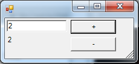

FSharp.Qualia
Qualia is a MVC-ish UI framework heavily inspired by React+Flux and FSharp.Desktop.UI The goal is to provide a decoupled architecture using Rx and idiomatic F#, based on an unidirectional event loop.
This project started as UI architecture research. FSharp.Desktop.UI seemed like a great solution, but still relied on WPF bindings and had no facility to handle collections. Still, it would not exist without FSharp.Desktop.UI - a big THANK YOU to @dmitry-a-morozov and @forki.
Architecture overview

PM> Install-Package FSharp.Qualia
Example
A minimal Qualia app needs 5 types:
- an Event discriminated union
- a model, with reactive properties
- a view, usually linked to a WinForms or WPF window, listening to the model changes and send events
- a dispatcher, handling these events and transforming the model
- an event loop, wiring all previous types
The example is a simple winforms numeric up down. The final app will look like this:  The + and - buttons increment or decrement the value, which is displayed in a label and a textbox. Changin the value in the textbox will update the value if it can be parsed to an int.
Event type
This is the core of Qualia - the type describing everything that happens in the app.
1: 2: 3: 4: 5: 6: 7: 8: |
|
Model
Only one property: the value. ReactiveProperty is basically a wrapper around Rx BehaviorSubject. It's an IObservable that will raise the last stored value on subscription. Its parameter is the initial value
1: 2: 3: |
|
View
The view is split in two parts: the form itself and the Qualia View.
Form
The actual Form backing the view. all exposed members will be used by the view.
This could be a WinForms designer type, or a WPF one using the awesome FsXaml. There is a WPF sample of the NumericUpDown in the repo.
1: 2: 3: 4: 5: 6: 7: 8: 9: 10: 11: 12: 13: 14: 15: 16: 17: 18: 19: 20: |
|
Qualia View
The actual Form backing the view. all exposed members will be used by the view. Qualia Views are templated with three types : the event one, the visual element one and the model.
1: 2: |
|
EventStreams returns a list of IObservable
1: 2: 3: 4: 5: |
|
SetBindings subscribe to property changes in the model and updates the ui accordingly. In this case, when the model value changes, we set both the label and the textbox content
1: 2: 3: |
|
Dispatcher
The dispatcher is a glorifed event handler. It reacts to events sent by the view by modifing the model. Each event can be handled synchronously or asynchronously. The Dispatcher method returns a wrapped handler.
1: 2: 3: 4: 5: 6: 7: 8: 9: 10: 11: 12: 13: 14: 15: 16: 17: 18: |
|
Event Loop
Finally, we need to use these types and run the application:
1: 2: 3: 4: 5: 6: 7: 8: |
|
Some more info
Samples & documentation
The library comes with comprehensible documentation.
It can include tutorials automatically generated from *.fsx files in the content folder.
The API reference is automatically generated from Markdown comments in the library implementation.
Tutorial contains a further explanation of this sample library.
API Reference contains automatically generated documentation for all types, modules and functions in the library. This includes additional brief samples on using most of the functions.
Contributing and copyright
The project is hosted on GitHub where you can report issues, fork the project and submit pull requests. If you're adding a new public API, please also consider adding samples that can be turned into a documentation. You might also want to read the library design notes to understand how it works.
The library is available under Public Domain license, which allows modification and redistribution for both commercial and non-commercial purposes. For more information see the License file in the GitHub repository.
| Up
| Down
| Edit of string
Full name: Index.MainEvents
val string : value:'T -> string
Full name: Microsoft.FSharp.Core.Operators.string
--------------------
type string = String
Full name: Microsoft.FSharp.Core.string
type MainModel =
new : unit -> MainModel
member Value : ReactiveProperty<int>
Full name: Index.MainModel
--------------------
new : unit -> MainModel
type ReactiveProperty<'a> =
interface IObservable<'a>
new : init:'a -> ReactiveProperty<'a>
new : source:IObservable<'a> * init:'a -> ReactiveProperty<'a>
override ToString : unit -> string
member Value : 'a
member private sub : BehaviorSubject<'a>
member Value : 'a with set
Full name: FSharp.Qualia.ReactiveProperty<_>
--------------------
new : init:'a -> ReactiveProperty<'a>
new : source:IObservable<'a> * init:'a -> ReactiveProperty<'a>
val int : value:'T -> int (requires member op_Explicit)
Full name: Microsoft.FSharp.Core.Operators.int
--------------------
type int = int32
Full name: Microsoft.FSharp.Core.int
--------------------
type int<'Measure> = int
Full name: Microsoft.FSharp.Core.int<_>
type MainForm =
inherit Form
new : unit -> MainForm
override OnLoad : e:EventArgs -> unit
member ButtonDown : Button
member ButtonUp : Button
member Label : Label
member TextBox : TextBox
Full name: Index.MainForm
--------------------
new : unit -> MainForm
type Form =
inherit ContainerControl
new : unit -> Form
member AcceptButton : IButtonControl with get, set
member Activate : unit -> unit
member ActiveMdiChild : Form
member AddOwnedForm : ownedForm:Form -> unit
member AllowTransparency : bool with get, set
member AutoScale : bool with get, set
member AutoScaleBaseSize : Size with get, set
member AutoScroll : bool with get, set
member AutoSize : bool with get, set
...
nested type ControlCollection
Full name: System.Windows.Forms.Form
--------------------
Form() : unit
type TableLayoutPanel =
inherit Panel
new : unit -> TableLayoutPanel
member BorderStyle : BorderStyle with get, set
member CellBorderStyle : TableLayoutPanelCellBorderStyle with get, set
member ColumnCount : int with get, set
member ColumnStyles : TableLayoutColumnStyleCollection
member Controls : TableLayoutControlCollection
member GetCellPosition : control:Control -> TableLayoutPanelCellPosition
member GetColumn : control:Control -> int
member GetColumnSpan : control:Control -> int
member GetColumnWidths : unit -> int[]
...
Full name: System.Windows.Forms.TableLayoutPanel
--------------------
TableLayoutPanel() : unit
TableLayoutControlCollection.Add(control: Control, column: int, row: int) : unit
type TableLayoutPanelCellPosition =
struct
new : column:int * row:int -> TableLayoutPanelCellPosition
member Column : int with get, set
member Equals : other:obj -> bool
member GetHashCode : unit -> int
member Row : int with get, set
member ToString : unit -> string
end
Full name: System.Windows.Forms.TableLayoutPanelCellPosition
--------------------
TableLayoutPanelCellPosition()
TableLayoutPanelCellPosition(column: int, row: int) : unit
type Button =
inherit ButtonBase
new : unit -> Button
member AutoSizeMode : AutoSizeMode with get, set
member DialogResult : DialogResult with get, set
member NotifyDefault : value:bool -> unit
member PerformClick : unit -> unit
member ToString : unit -> string
event DoubleClick : EventHandler
event MouseDoubleClick : MouseEventHandler
Full name: System.Windows.Forms.Button
--------------------
Button() : unit
type TextBox =
inherit TextBoxBase
new : unit -> TextBox
member AcceptsReturn : bool with get, set
member AutoCompleteCustomSource : AutoCompleteStringCollection with get, set
member AutoCompleteMode : AutoCompleteMode with get, set
member AutoCompleteSource : AutoCompleteSource with get, set
member CharacterCasing : CharacterCasing with get, set
member Multiline : bool with get, set
member PasswordChar : char with get, set
member Paste : text:string -> unit
member ScrollBars : ScrollBars with get, set
...
Full name: System.Windows.Forms.TextBox
--------------------
TextBox() : unit
type Label =
inherit Control
new : unit -> Label
member AutoEllipsis : bool with get, set
member AutoSize : bool with get, set
member BackgroundImage : Image with get, set
member BackgroundImageLayout : ImageLayout with get, set
member BorderStyle : BorderStyle with get, set
member FlatStyle : FlatStyle with get, set
member GetPreferredSize : proposedSize:Size -> Size
member Image : Image with get, set
member ImageAlign : ContentAlignment with get, set
...
Full name: System.Windows.Forms.Label
--------------------
Label() : unit
Full name: Index.MainForm.OnLoad
type MainView =
inherit View<MainEvents,Form,MainModel>
new : mw:MainForm * m:MainModel -> MainView
override SetBindings : m:MainModel -> unit
override EventStreams : IObservable<MainEvents> list
Full name: Index.MainView
--------------------
new : mw:MainForm * m:MainModel -> MainView
type View =
| LargeIcon = 0
| Details = 1
| SmallIcon = 2
| List = 3
| Tile = 4
Full name: System.Windows.Forms.View
--------------------
type View<'Event,'Element,'Model> =
inherit IViewWithModel<'Event,'Model>
new : elt:'Element * m:'Model -> View<'Event,'Element,'Model>
member Root : 'Element
Full name: FSharp.Qualia.View<_,_,_>
--------------------
new : elt:'Element * m:'Model -> View<'Event,'Element,'Model>
Full name: Index.MainView.EventStreams
module Observable
from FSharp.Qualia
--------------------
module Observable
from Microsoft.FSharp.Control
Full name: FSharp.Qualia.Observable.mapTo
Full name: Microsoft.FSharp.Control.Observable.map
Full name: Index.MainView.SetBindings
type MainDispatcher =
interface IDispatcher<MainEvents,MainModel>
new : unit -> MainDispatcher
Full name: Index.MainDispatcher
--------------------
new : unit -> MainDispatcher
struct
member CompareTo : value:obj -> int + 1 overload
member Equals : obj:obj -> bool + 1 overload
member GetHashCode : unit -> int
member GetTypeCode : unit -> TypeCode
member ToString : unit -> string + 3 overloads
static val MaxValue : int
static val MinValue : int
static member Parse : s:string -> int + 3 overloads
static member TryParse : s:string * result:int -> bool + 1 overload
end
Full name: System.Int32
Int32.TryParse(s: string, style: Globalization.NumberStyles, provider: IFormatProvider, result: byref<int>) : bool
interface
abstract member InitModel : 'Model -> unit
abstract member Dispatcher : ('Event -> EventHandler<'Model>)
end
Full name: FSharp.Qualia.IDispatcher<_,_>
Full name: Index.MainDispatcher.InitModel
Full name: Index.MainDispatcher.Dispatcher
type STAThreadAttribute =
inherit Attribute
new : unit -> STAThreadAttribute
Full name: System.STAThreadAttribute
--------------------
STAThreadAttribute() : unit
type EntryPointAttribute =
inherit Attribute
new : unit -> EntryPointAttribute
Full name: Microsoft.FSharp.Core.EntryPointAttribute
--------------------
new : unit -> EntryPointAttribute
Full name: Index.main
type EventLoop<'Model,'Event,'Element> =
new : v:View<'Event,'Element,'Model> * c:IDispatcher<'Event,'Model> -> EventLoop<'Model,'Event,'Element>
member Create : unit -> unit
member Start : unit -> IDisposable
Full name: FSharp.Qualia.EventLoop<_,_,_>
--------------------
new : v:View<'Event,'Element,'Model> * c:IDispatcher<'Event,'Model> -> EventLoop<'Model,'Event,'Element>
Form.ShowDialog(owner: IWin32Window) : DialogResult
Full name: Microsoft.FSharp.Core.Operators.ignore